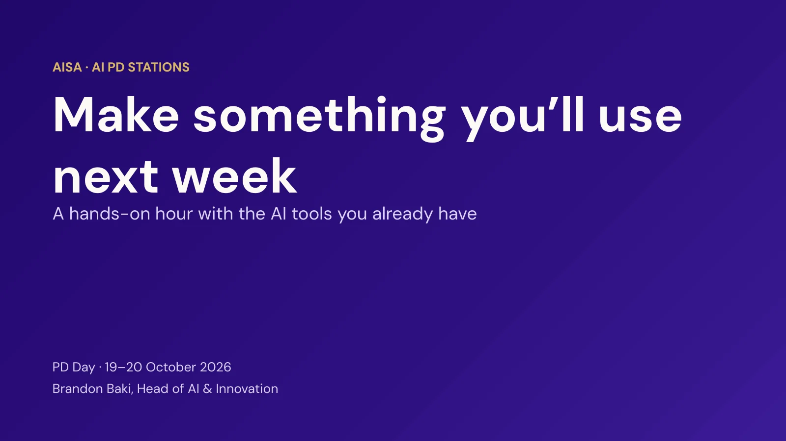

PD Day · 19–20 October 2026 يوما التطوير المهني · ١٩–٢٠ أكتوبر ٢٠٢٦
PD Day material مواد يومَي التطوير المهني
October 2026 أكتوبر ٢٠٢٦
The slides, links and activities from the October PD days, in one place. Finish what you started, try what you missed, or take it back to your team. الشرائح والروابط والأنشطة من يومَي التطوير المهني في أكتوبر، في مكان واحد. أكملوا ما بدأتموه، أو جرّبوا ما فاتكم، أو شاركوه مع فريقكم.
Choose your own AI adventure اختاروا مغامرتكم مع الذكاء الاصطناعي
Choose your own AI adventure
AI PD stations · Make something you’ll use next week محطات التطوير المهني في الذكاء الاصطناعي · اصنعوا شيئاً ستستخدمونه الأسبوع المقبل
A hands-on hour with the AI tools already in your AISA account. Pick the station that fixes a problem you actually have, work through its guide with a real lesson, and leave with something finished. ساعة تطبيقية مع أدوات الذكاء الاصطناعي المتاحة أصلاً في حسابكم في AISA. اختاروا المحطة التي تحلّ مشكلة تواجهونها فعلاً، واتّبعوا دليلها على درس حقيقي، واخرجوا بشيء جاهز للاستخدام.
Brandon Baki · Head of AI & Innovation براندون باكي · رئيس قسم الذكاء الاصطناعي والابتكار
MagicSchool access ends Tuesday 20 October ينتهي الوصول إلى MagicSchool يوم الثلاثاء ٢٠ أكتوبر
AISA is not renewing MagicSchool. Open your MagicSchool history and save anything you want to keep: copy it into a Google Doc or download it to your Drive. Nearly everything we did there, we can now do with tools we already have, inside our Google accounts. لن تجدّد AISA اشتراك MagicSchool. افتحوا سجلّكم في MagicSchool واحفظوا كل ما تريدون الاحتفاظ به: انسخوه إلى مستند Google أو نزّلوه إلى Drive. ويمكننا الآن القيام بكل ما كنّا نفعله هناك تقريباً بأدوات نملكها أصلاً، داخل حسابات Google الخاصة بنا.
The game · pD-Day 2026 اللعبة · pD-Day 2026
The PD Arcade لعبة PD Arcade
Walk around the school with Leo the lion. Each room is one station: read the briefing, tick off the missions with step-by-step help and screenshots, then pass Leo’s quiz to earn the badge. Collect all seven to become Leader of the Pride, with a certificate to print. تجوّلوا في المدرسة مع الأسد ليو. كل غرفة محطة واحدة: اقرأوا الإحاطة، وأنجزوا المهام بمساعدة خطوة بخطوة ولقطات شاشة، ثم اجتازوا اختبار ليو لتنالوا الوسام. اجمعوا الأوسمة السبعة لتصبحوا «قائد العرين»، مع شهادة يمكنكم طباعتها.
Opens in a new tab, in English or Arabic to match the Hub. Your name and badges are saved in that browser only, so finish on the same laptop you started on. تفتح في علامة تبويب جديدة، بالإنجليزية أو العربية حسب لغة المنصّة. يُحفَظ اسمكم وأوسمتكم في ذلك المتصفّح فقط، لذا أكملوا على الحاسوب نفسه الذي بدأتم عليه.
Before you start · two ground rules قبل أن تبدأوا · قاعدتان أساسيتان
1 No student personal data لا بيانات شخصية للطلاب
Describe your class in general terms. Names, IDs and wellbeing details never go into an AI tool. صِفوا صفّكم بعبارات عامة. الأسماء وأرقام الهوية وتفاصيل الرفاه لا تُدخَل أبداً في أي أداة ذكاء اصطناعي.
2 You are the expert أنتم الخبراء
Check every fact before students see it. In our demos Gemini unbalanced a chemical equation and invented a statistic. تحقّقوا من كل معلومة قبل أن يراها الطلاب. في عروضنا التجريبية أخلّ Gemini بموازنة معادلة كيميائية واختلق إحصائية.
The seven stations المحطات السبع
All guides ↗ كل الأدلّة ↗Skip the game and open a station’s guide directly. تجاوزوا اللعبة وافتحوا دليل المحطة مباشرة.
- 1 Differentiation & Scaffoldingالتمايز والدعم التدريجي Re-level text, translate and vocabulary lists in the Classroom Gemini tab.إعادة ضبط مستوى النص والترجمة وقوائم المفردات في تبويب Gemini في Classroom.
- 2 Polished Lesson Decks, Fastعروض دروس متقنة… بسرعة Three routes to a Google Slides deck with Gemini.ثلاث طرق للوصول إلى عرض Google Slides مع Gemini.
- 3 Engagement & Active Participationالتفاعل والمشاركة النشطة A lesson hook and a choice board for Grade 8 science.افتتاحية مشوّقة للدرس ولوحة خيارات لمادة العلوم في الصف ٨.
- 4 Turn Your Slides into a Videoحوّلوا شرائحكم إلى فيديو Google Vids: script, voices, language and music.Google Vids: النص والأصوات واللغة والموسيقى.
- 5 Code Your Own Class Activitiesبرمجوا أنشطة صفّكم بأنفسكم Gemini Canvas to the AISA Activity Hub: link, QR code and Classroom.من Gemini Canvas إلى منصة أنشطة AISA: رابط ورمز QR وزر Classroom.
- 6 Student Data Anonymizerأداة إخفاء هوية بيانات الطلاب Use AI with student data without the AI ever seeing who the students are.استخدموا الذكاء الاصطناعي مع بيانات الطلاب من دون أن يعرف هويتهم أبداً.
- 7 AI & Assessmentالذكاء الاصطناعي والتقييم Why AI detectors can’t prove who wrote it, and how to design assessments that don’t need one. A Learning Hub module.لماذا لا تثبت كاشفات الذكاء الاصطناعي من كتب النص، وكيف تُصمَّم تقييمات لا تحتاج إليها. وحدة على منصّة التعلّم.
The slides الشرائح
14 slides, in English. Use the arrows, the arrow keys or the thumbnails, or press Present for full screen. ١٤ شريحة باللغة الإنجليزية. استخدموا الأسهم أو مفاتيح الأسهم أو الصور المصغّرة، أو اضغطوا «عرض» لملء الشاشة.

1 / 14 Make something you’ll use next week
Before you go قبل أن تغادروا
The station guides stay online, so come back any time. In about two weeks there will be a short check-in: did you use it, and what happened? تبقى أدلّة المحطات متاحة على الإنترنت، فعودوا إليها متى شئتم. وبعد نحو أسبوعين ستصلكم متابعة قصيرة: هل استخدمتموه، وماذا حدث؟
Exit ticketبطاقة الخروج
Five minutes. Your answers decide which tools we support, what we train next, and whether anything is still missing. خمس دقائق. إجاباتكم تحدّد الأدوات التي ندعمها، وما ندرّب عليه لاحقاً، وما إذا كان شيء ما زال ناقصاً.
Open the exit ticket ↗افتحوا بطاقة الخروج ↗Professional Meeting Logسجلّ الاجتماعات المهنية
Log that you attended. The meeting name is: سجّلوا حضوركم. اسم الاجتماع: Choose your own AI adventure
Open the meeting log ↗افتحوا سجلّ الاجتماعات ↗Questions or ideas?أسئلة أو أفكار؟
Loved a station, or have an idea for a new one? Help run it next time. أعجبتكم محطة، أو لديكم فكرة لمحطة جديدة؟ ساعدوا في تقديمها في المرة القادمة.
bbaki@aisa.sch.ae